～MESSAGE～
Hello! Nice to meet you.
このサイトは塩森友貴の自己紹介サイトです。
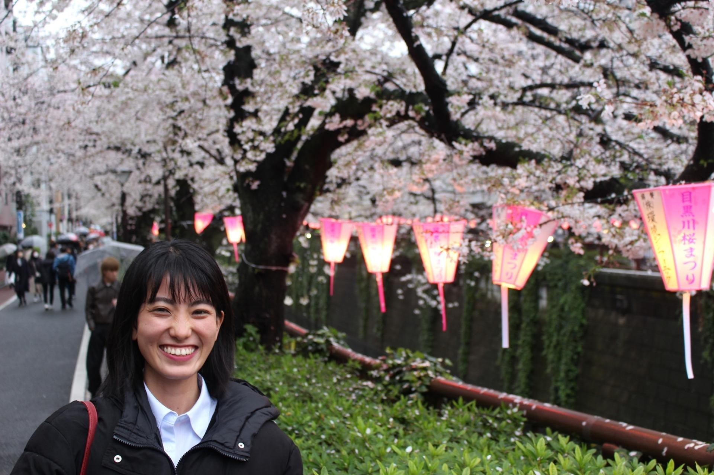
～FROM～
- 生年月日:2000年12月16日
- 血液型:A型
- 出身: 熊本県芦北町
| 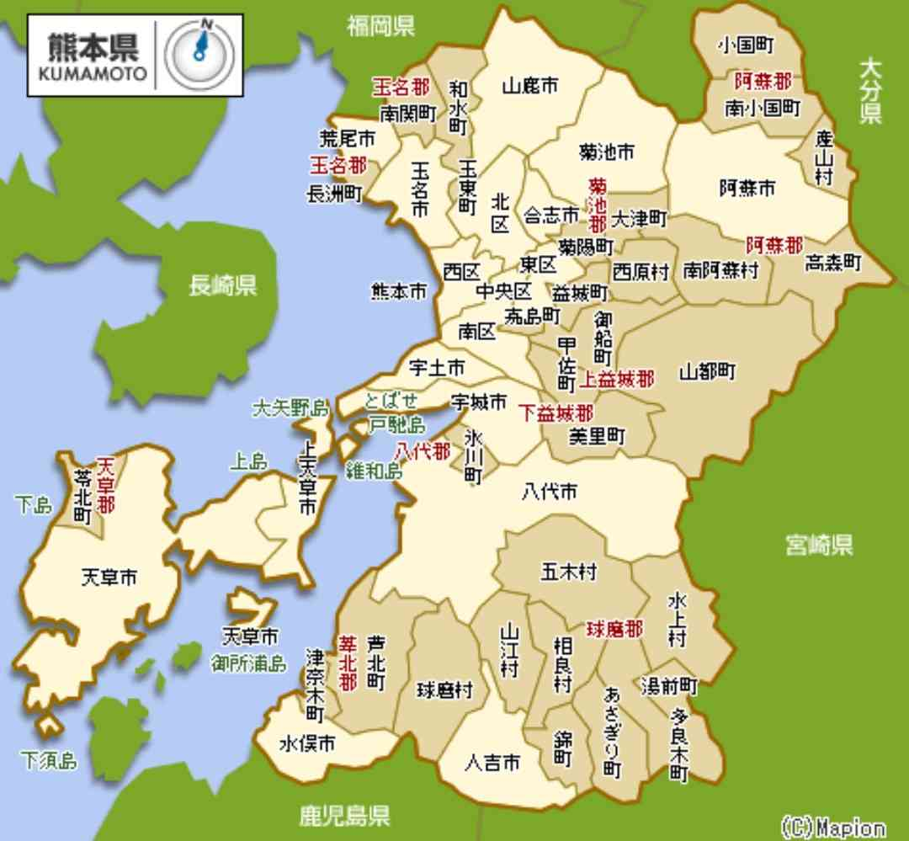 | 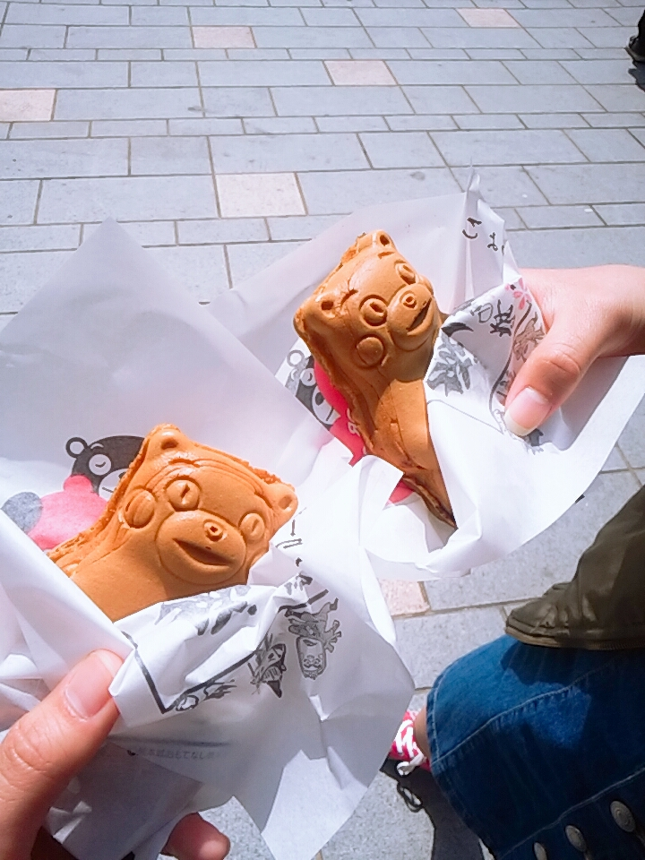 | 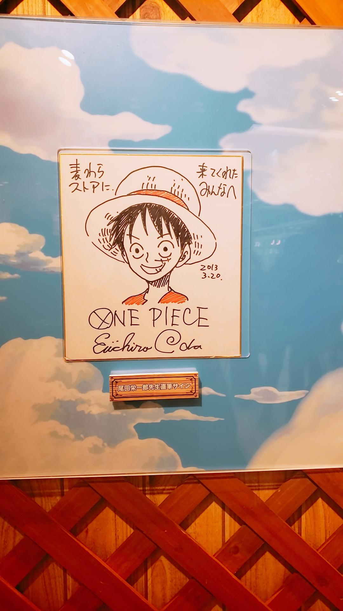 | 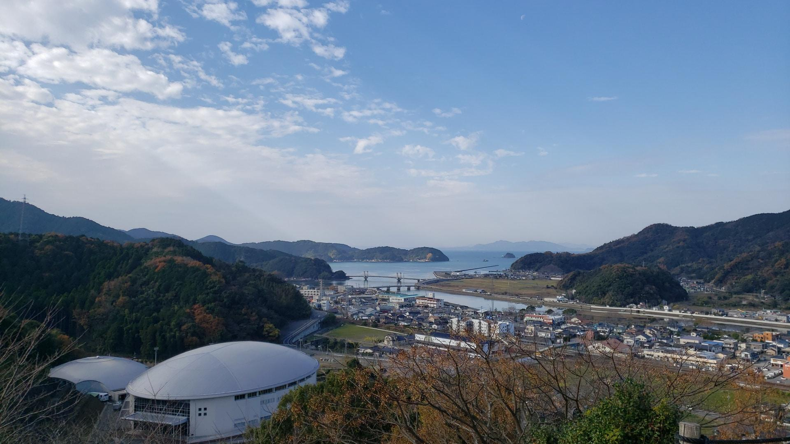 | .jfif) |
.jfif) |
|---|
～HOBBY～
- カフェ巡り
- 神社巡り
- 音楽鑑賞
- スポーツ観戦
- 映画鑑賞
| 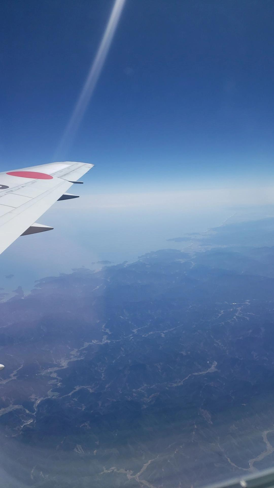 | 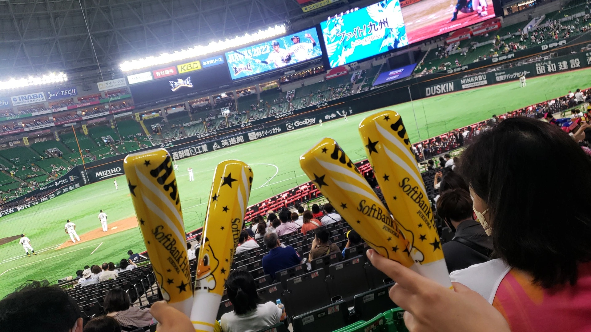 | 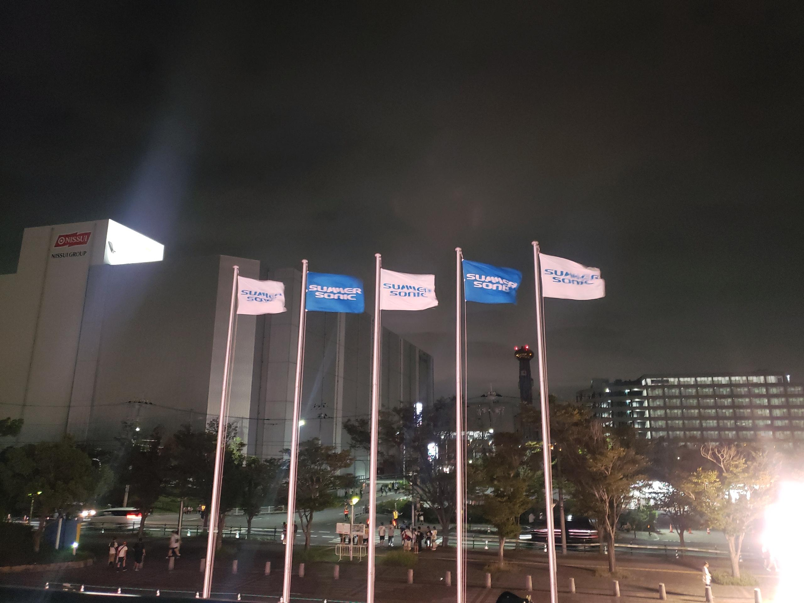 | 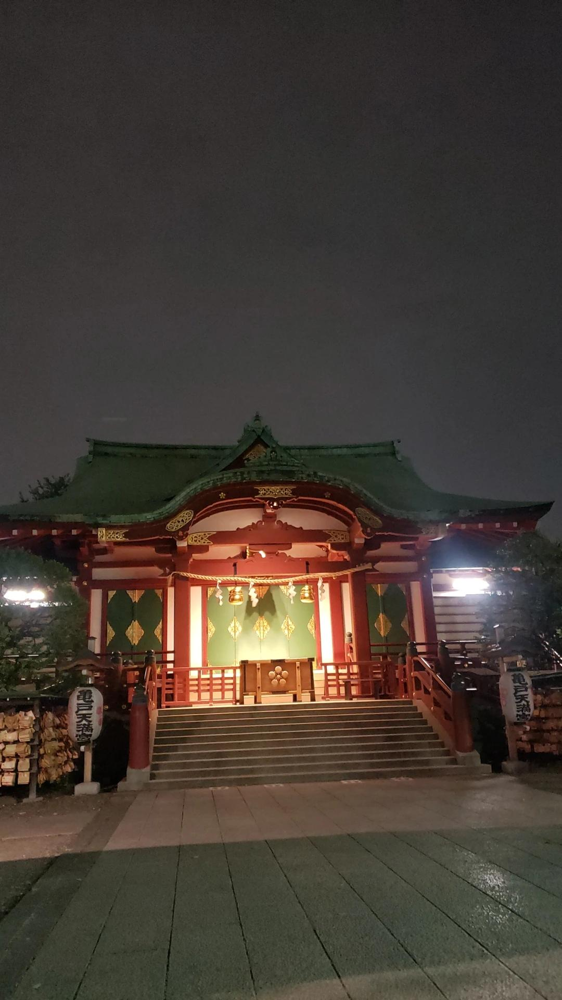 | 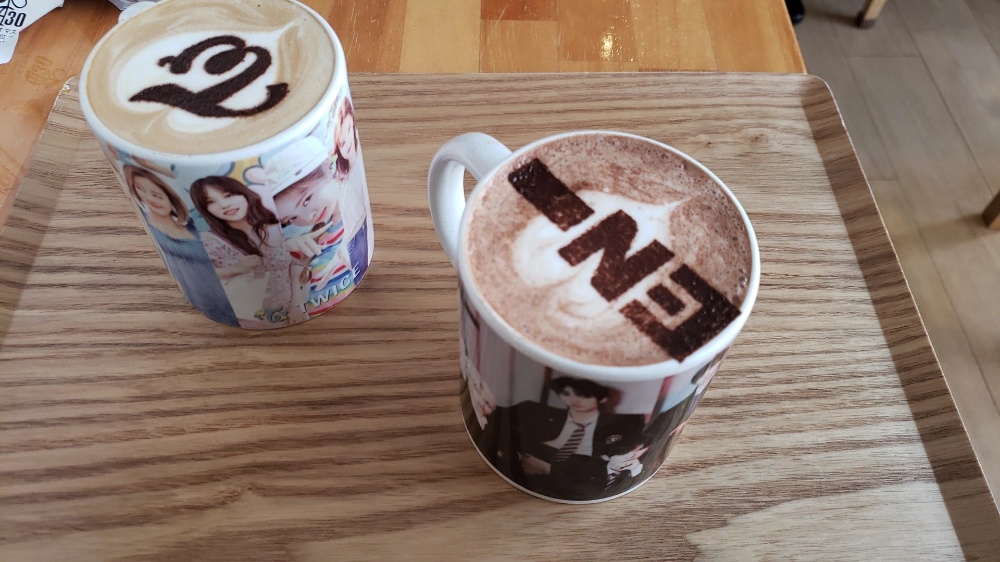 | 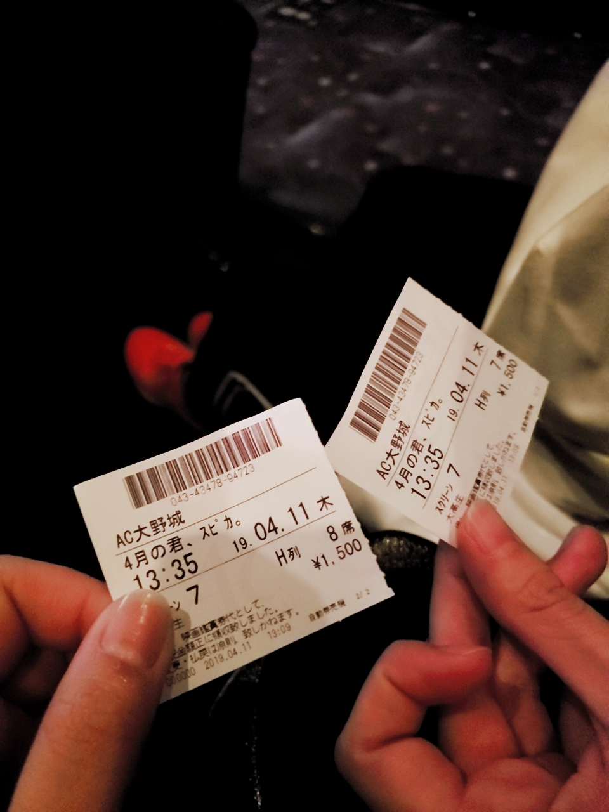 |
|---|
～CONTACT～
- 株式会社アクロネット
- アクセス: 銀座線 三越前から徒歩5分
- 電話番号: 000-0000-0000
- メール： yuki.shiomori@aco-net.co.jp
| @xxx |  |
@xxx |
|---|
NEWS
2023/04/xx ○○を更新しました。